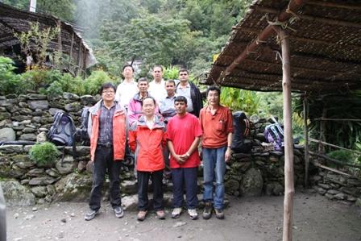
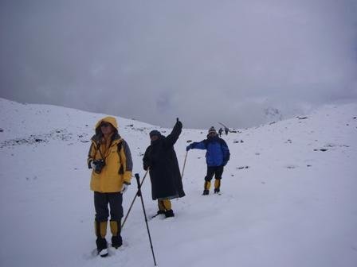

Initiated
by TPE, an 11-day field expedition to Yala Glacier from October 3-13, 2009, was conducted. Yala Glacier
is located at (28.25°N, 85.62°E) in the Langtang region in Nepal on the southern slope of the Himalayas.
Characteristically, it has a wide coverage area (2.5 km2)
and gentle slope (22°southwest); the highest and lowest elevations of Yala Glacier are 5749 and 5090 m
a.s.l.
The
expedition was a joint effort between Chinese and Nepalese scientists, led by Prof. Yao Tandong of the
ITP and Prof. Lochan P. Devkota of the Tribhuvan University, Nepal. The objectives were to monitor the
glacier dynamics, gain an understanding the local hydrology and engage in long-term mass balance
monitoring to reveal interactions between climate change and glacial variation in the
region.
Nepal,
within the Third Pole region, has recently documented significant glacial retreat and glacial lake
expansion, arousing social concern with the threat to the national sustainability. Due to limited
investigation, however, little is known about the mass balance budget of glaciers on the southern slope
of the Himalayas, or about the long-term trends.
In
the context of global climate change, a comparative study of glacier response to climate change is also
necessary and important between the northern and southern slopes of the Himalayas. This joint expedition
therefore not only substantiates the Sino-Nepal MoU in TPE study, but also demonstrates the feasibility
and promising outlook for multinational, collaborative study of TPE-related issues.
Among
participants were Prof. Tandong Yao, Prof. Lochan P. Devkota, Prof. Yaoming Ma, Prof. Lide Tian,
Associate Prof. Wusheng Yu, Associate Profs Deepak Aryal and Tek Bahadur Chetri, PhD candidate Dambaru
B. Kattel and Lecturer Binod Dawadi.

Group photo of expedition crews at the mountain foot in southern
Himalaya (photo credit: Dambaru Kattel)

Expedition members hiking on the Yala Glacier (photo credit: Dambaru Kattel)